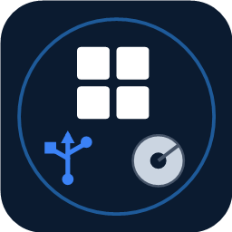
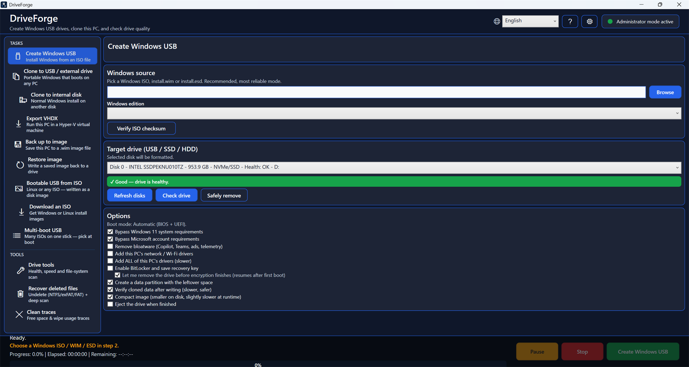
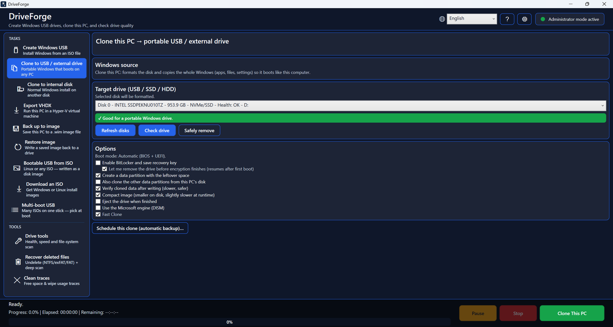
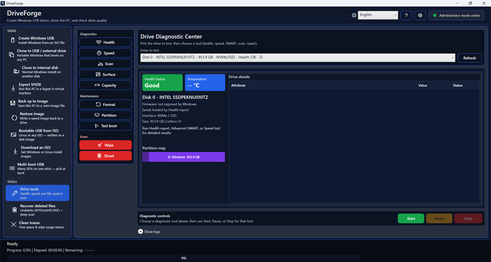
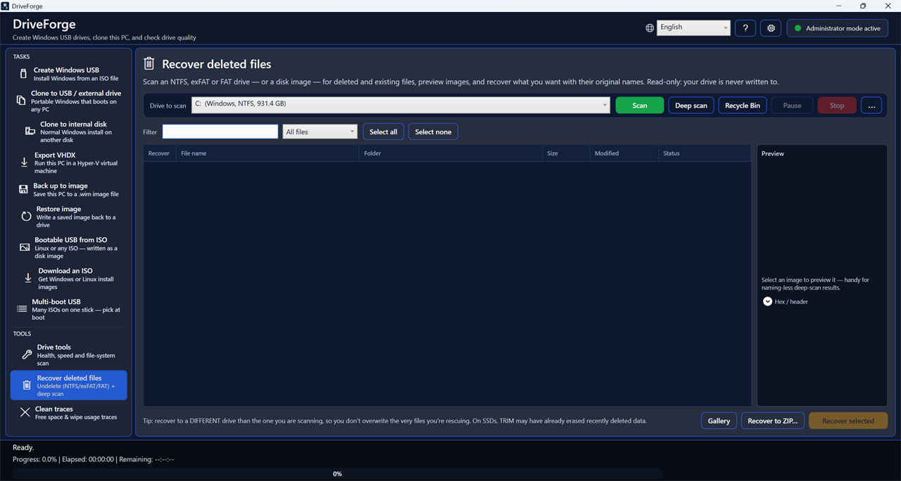
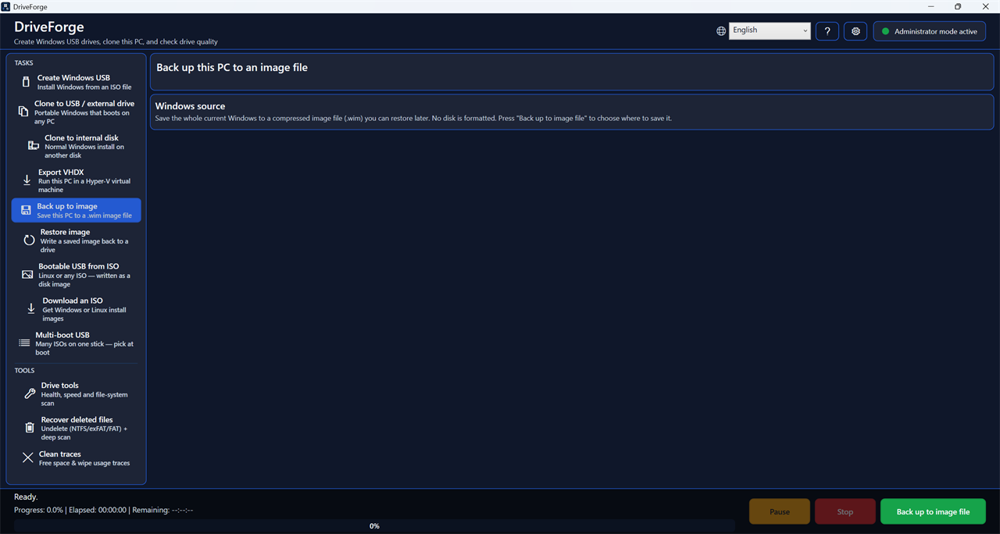

Create Windows USB drives, clone this PC, back it up, and check drive health — in one portable app.
One .exe, about 80 MB. Nothing to install. Verify what you downloaded →

A bootable-USB maker, a PC-clone tool, an undeleter and a drive doctor — in a single file you can carry on a stick.
From an ISO, WIM or ESD. Boots on both BIOS and UEFI. Optionally bypass the Windows 11 hardware and Microsoft-account requirements, and add this PC's drivers.
To a portable USB or external drive that boots on any PC with your apps and settings, or to an internal disk as a normal Windows install.
Save the whole PC to an image file with incremental restore points, and write it back later. Scheduled unattended backups when the drive is connected.
Undelete on NTFS, exFAT and FAT — plus a deep scan that carves files out of raw sectors even after the filesystem entry is gone.
Overwrite a whole drive, wipe only the free space, shred individual files, or clean usage traces. SSD-aware, and honest about what TRIM can and cannot guarantee.
Health and SMART with a plain-language verdict, temperature trend, speed test, surface scan for bad blocks, file-system check and repair.
Write Linux or any disk image straight to a stick — or build a multi-boot stick that holds many ISOs and lets you pick at boot.
Create, delete, resize, move, convert between MBR and GPT, set the active partition, and find lost partitions — with a table backup taken before risky moves.
Every destructive action asks first, defaults to Cancel, and tells you exactly which disk it is about to touch.




Every release is built from public source by GitHub Actions — not on a developer's laptop — and carries a cryptographic record of exactly which commit produced it.
Compare the SHA-256 in SHA256SUMS.txt with the file you downloaded:
Get-FileHash DriveForge.exe -Algorithm SHA256With the GitHub CLI, confirm the binary really was produced by this repository's build pipeline:
gh attestation verify DriveForge.exe --repo ForgeLabsSoft/driveforgeThis proves the exe came from a specific commit through a public, auditable build — a stronger guarantee than a signature alone, and one most small Windows tools do not offer.
DriveForge is not yet code-signed, so Windows SmartScreen shows “Windows protected your PC” the first time you run it. Click More info → Run anyway.
Code-signing certificates cost money that this project does not make, and the free programme for open-source projects requires a level of public recognition DriveForge has not reached yet. Rather than ask you to simply trust it, the source is public, the build is reproducible on GitHub's servers, and both checks above let you confirm the download yourself.
Some antivirus tools also flag it. A tool that writes raw disk sectors and creates bootable drives looks, to a scanner, a lot like something that shouldn't. Report a false positive if you hit one.
Nothing about you is collected or sent anywhere. There is no crash reporter, no usage counter and no “phone home”. The app never contacts anyone on its own.
Reporting a problem is entirely manual: the button opens either a bug form or a pre-addressed email, and nothing is submitted until you send it yourself. The link to the public bug tracker carries only your DriveForge version and Windows build — never error text, because error messages contain file paths and on Windows those contain your account name.
It is free and open source under the GPL-3.0 licence. There is no paid tier, no ads and no bundled software. If it saved you a job you would have paid for, there is a Ko-fi page — entirely optional.
No. It is a single self-contained .exe. Put it on a USB stick and run it anywhere. It does need to run as Administrator, because creating and cloning drives requires direct disk access.
Your system disk is hidden from the target list so it cannot be picked by mistake. Every destructive action shows exactly which disk and what is on it, defaults to Cancel so pressing Enter never erases anything, and re-checks the disk's identity by serial number immediately before writing — because Windows can renumber disks if you unplug something at the wrong moment.
Yes. DriveForge takes a snapshot of the live Windows installation and copies from that, so you do not need to boot from anything else. The result keeps your apps, settings, permissions and file layout.
Fast Clone reads the file table straight off the snapshot and writes files directly to the target — fast, no temporary image, and it preserves permissions, hardlinks, reparse points and alternate data streams. The Microsoft engine (DISM) writes a temporary image to your system drive first and takes two passes, but is the more conservative choice. Fast Clone is the default.
From inside the app: Settings → Report a problem. Or open an issue on GitHub, or email support@forgelabssoft.com. Attaching the log file helps a lot — the app saves it to your Desktop.
English, Romanian, Spanish, French, German, Italian, Portuguese, Dutch, Russian, Polish, Turkish, Ukrainian, Chinese, Japanese, Hindi, Indonesian and Arabic. It picks your Windows language on first run.